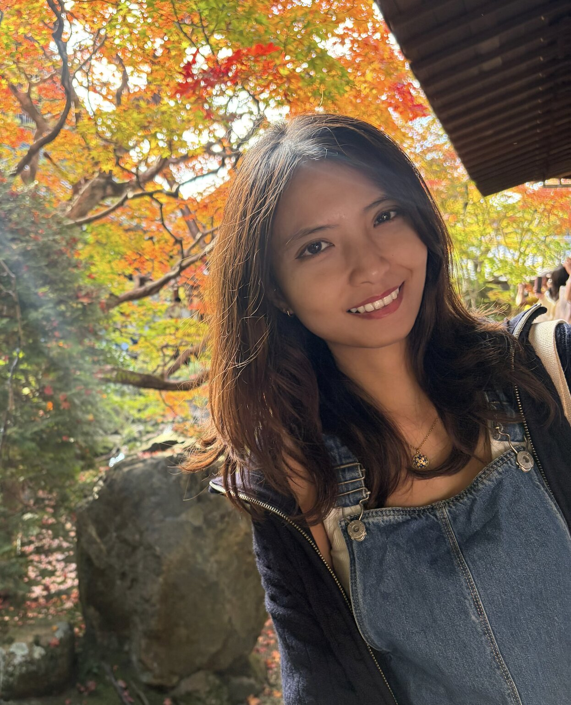

I am working with environmental data, spatial analysis, and AI to build a rewilding potential map in Europe.
My research focuses on coastal rewilding in 3 habitats: mudflat, saltmarsh and seagrass meadows.
I want to better understand what drives coastal ecosystem degradation, and how these systems can recover and reorganize over time through nature-based solutions (NbS). I am especially interested in approaches with minimal human intervention, where nature is given more space to heal itself.
Coastal ecosystems are among the most important systems on Earth. They help mitigate climate change by storing carbon, support biodiversity, and protect coastlines. Sadly, they are rapidly degraded from climate change, biodiversity loss, and long histories of human intervention.
Coastal rewilding, until this day, is still not fully defined. There is an ongoing debate about what it really means in practice.
My goal is to contribute by making the concept of rewilding more measurable and easier to describe using data and quantitative approaches. I wish to develop and employ mathematical models, theories, and hypotheses for the idea of coastal rewilding.
In baby steps (occasionally stumbling), I hope to build tools that support decision-making with data-based evidence.
I like cats, escape games, and potatoes (in that order).
- 2026 April 27-30, I will be in Gyldensteen Coastal Lagoon (Odense, Denmark) to do a fieldwork (WP3 and WP4) - 2026 May, I will host an online training about good data practice and FAIR principle for REWRITE members (write me up if you're interested about joining or to get the materials) - 2026 May, I will be in Scheldt Estuary (Ghent, Belgium) to do a fieldwork (WP3 and WP4) - 2026 August, I will be in Brest, France for a conference -